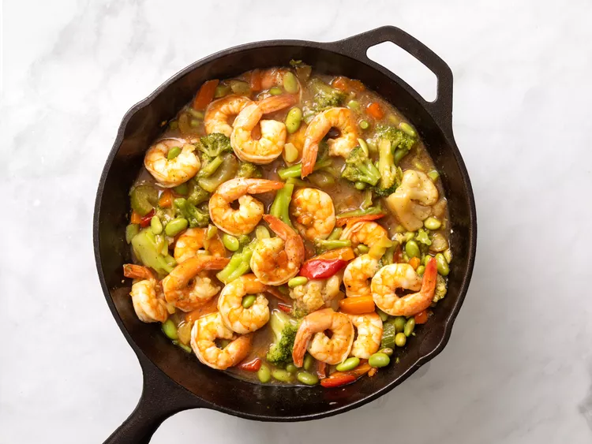

Shrimp Stir Fry

Description
This shrimp stir fry recipe with frozen vegetables, frozen shrimp, and a simple stir fry sauce-
comes together in less than 30 minutes for a quick and easy dinner! Serve over rice or with noodles, and enjoy.
Ingredients:
- 1 cup chicken stock
- 1 tablespoon reduced-sodium soy sauce
- 1 tablespoon cornstarch
- 1 tablespoon minced garlic
- salt and ground black pepper to taste
- 3 tablespoons sesame oil
- 1 (16 ounce) package frozen stir-fry vegetables
- 20 uncooked medium shrimp, peeled and deveined
Steps:
Home